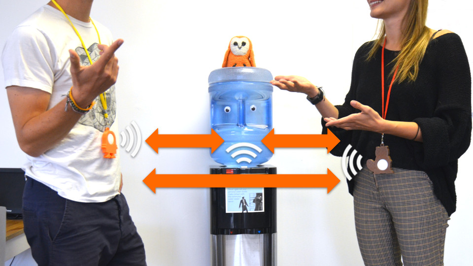
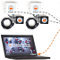
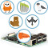
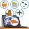
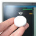

Demonstrate proximity interaction detection
Using a reelyActive Showcase Kit and DirAct
The TL;DR (Too Long; Didn't Read)
Learn how to configure a reelyActive Showcase Kit to detect who is interacting with who or what.
- What's DirAct?
- DirAct is embedded software that enables Bluetooth beacons to detect and relay the presence of peers nearby.
- Do I need a Showcase Kit?
- Most of the demo can be accomplished with Espruino beacons and a Raspberry Pi 3 or equivalent.
- So why buy a Showcase Kit?
- The Showcase Kit is configured to demonstrate this use case out-of-the-box—without having to use a terminal or edit a line of code .
Setting up the infrastructure Step 1 of 4
Set up the Showcase Kit to collect and visualise ambient wireless data.
- Is this plug-and-play?
- Yes! With a Showcase Kit, simply apply power to each device to complete this step.
- What's Pareto Anywhere?
- Pareto Anywhere is reelyActive's open source software suite, bundled as pi-suite for the Pi.

Establish the network of Owl-in-Ones Part 1
The three Owl-in-Ones included with a Showcase Kit ship configured to create a WiFi network among themselves, with one acting as access point (AP). Simply apply power to the Owl-in-Ones and the WiFi network will be established.
It is possible to use a single Owl-in-One for the demonstration. In this case, use the one labelled as Access Point.
References
-

Create a WLAN of Owl-in-Ones and a laptop
If required, follow this tutorial to revert Owl-in-Ones to their standard configuration.
Run the Pareto Anywhere software Part 2
The Pi included with a Showcase Kit ships configured to run Pareto Anywhere software, and to connect to the WiFi network of Owl-in-Ones. Simply apply power to the Pi and it will connect to the WiFi network, run the software and receive data from each of the Owl-in-Ones.
It is also possible to run Pareto Anywhere software on a laptop connected to the WiFi network (see references below).
References
-

Install our open source software suite on a Pi
If required, follow this tutorial to (re)configure a Raspberry Pi. -

Install our open source software suite on a laptop
If desired, follow this tutorial to use a laptop in place of the Raspberry Pi.
Browse to Hello-DirAct! Part 3
The Pareto Anywhere software includes a variety of web applications, including Hello-DirAct! which visualises the real-time interaction data from DirAct beacons. Browse to the hello-diract web app based on your configuration:
- to
- 192.168.1.xxx:3001/apps/hello-diract/ (change xxx to the 's IP address)
- / to self
- localhost:3001/apps/hello-diract/
In the next step the Puck.js will be configured to run DirAct embedded software so that data appears in the Hello-DirAct! web app.
Running DirAct on Puck.js Step 2 of 4
Program the Puck.js beacons with DirAct embedded software.
- What's Puck.js?
- A Bluetooth beacon equipped with a variety of sensors which runs Espruino, allowing it to be programmed in JavaScript from a web browser.
- Is DirAct configurable?
- Yes. In fact experimentation with DirAct on Puck.js is strongly encouraged for familiarisation with the technology and optimisation of the settings for the target application.
Program the Puck.js Part 1
The Puck.js included with a Showcase Kit ship configured with the latest version of DirAct. Simply insert the battery and the Puck.js should run the DirAct code.
Toggle between modes by clicking the Puck.js like a button . A red blink indicates sleep while a green blink indicates normal operation. Select sleep mode when not in use to prolong the battery life.
References
-

Develop Bluetooth LE applications with Puck.js
If required, follow this tutorial to revert a Puck.js to a DirAct configuration.
Observe the data in Hello-DirAct! Part 2
Observe the Hello-DirAct! web app presented in the previous step, and confirm that each Puck.js appears in the display. Manipulate the Puck(s) as follows to observe changes in their real-time data:
- Acceleration
- Flip the Puck.js over to observe how its orientation can be monitored
- Nearest
- Place the Puck.js near a peer to observe how they detect one another
Configuring proximity beacons Step 3 of 4
Configure other beacons to be recognised by the DirAct embedded software running on the Puck.js.
- What's a proximity beacon?
- A transmit-only beacon that can be detected by a DirAct beacon, but not vice-versa, such as the "water cooler beacon" in the header image.
- C0DEB10E1DD1E01BED0C?
- It is "Code Blue ID" and the mirror thereof, if that helps to remember! DirAct was co-developed with Code Blue Consulting.
Configure the Minew E8 Part 1
Use the BeaconSet+ app* to configure SLOT2 of the Minew E8 beacon as Eddystone-UID with the parameters listed here and in the screenshot.
- Namespace ID
- C0DEB10E1DD1E01BED0C
- Instance ID
- 0000XXXXXXXX
Substitute X for a unique, hexadecimal ID - Adv interval
- 200ms
Should be less than the DirAct OBSERVE_PERIOD_MILLISECONDS - Radio TX Power
- 0dBm
Can be reduced to limit proximity range
For ease of association, the Instance ID can be set to the last two digits printed on the Minew E8 beacon, preceded by six zeros.
*see the References section below
References
-

Configure a Minew E8 Beacon
If required, follow this tutorial to (re)configure each Minew E8 beacon.
Observe the data in Hello-DirAct! Part 2
Observe the Hello-DirAct! web app and confirm that the Instance ID of each Minew E8 appears in the nearest table of any Puck.js with which it is in close proximity.
Configuring exciter beacons Step 4 of 4
Configure other beacons to trigger the Puck.js running DirAct to transmit its interaction table.
- What's an exciter beacon?
- A transmit-only beacon that signals to any DirAct beacon in range to transmit its interaction table. The exciter tells the DirAct beacon to share the history of its most frequent interactions.
- 0000E8C17E45?
- It is "exciters" if that helps to remember.
Configure the Minew E8 Part 1
Use the BeaconSet+ app* to configure SLOT2 of the Minew E8 beacon as Eddystone-UID with the parameters listed here and in the screenshot.
- Namespace ID
- C0DEB10E1DD1E01BED0C
- Instance ID
- 0000E8C17E45
Should match an ID among the DirAct EXCITER_INSTANCE_IDS - Adv interval
- 200ms
Should be less than the DirAct OBSERVE_PERIOD_MILLISECONDS - Radio TX Power
- -20dBm
Can be adjusted to increase or decrease range
It is acceptable for multiple exciter beacons to use the same Instance ID.
*see the References section below
References
-
Configure a Minew E8 Beacon
If required, follow this tutorial to (re)configure each Minew E8 beacon.
Observe the data in Hello-DirAct! Part 2
Observe the Hello-DirAct! web app and confirm that the interaction table of each Puck.js is displayed when it comes in close proximity with the exciter beacon. Note that the DirAct embedded software has an EXCITER_HOLDOFF_SECONDS feature which means it will wait at least as many seconds before each subsequent transmission of its interaction table!
Embrace the ambient data in your space
Pareto Anywhere is open source software that runs anywhere to digitally transform any space.
Where to next?
Continue exploring our open architecture and all its applications.
-

diyActive Home
The home for reelyActive developers.